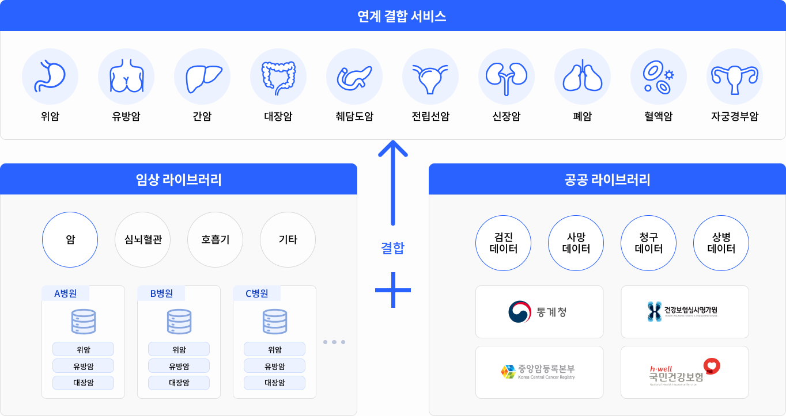

K-CURE 라이브러리
- 의료기관 임상 CDW 데이터를 정제해서 고품질 표준화된 임상 라이브러리 제공
- 환자 전주기 이력관리형 공공라이브러리 제공
- 임상, 검진, 사망원인 등 다양한 데이터를 결합한 데이터 제공

위암, 간암, 유방암, 대장암, 췌담도암, 전립선암, 신장암, 폐암, 혈액암, 자궁경부암
암 임상 라이브러리 : 암(Cancer), 심뇌혈관, 호흡기, 기타 정보 제공 - A병원(위암, 유방암, 대장암), B병원(위암, 유방암, 대장암), C병원(위암, 유방암, 대장암) 등
암 공공 라이브러리 : 검진데이터, 사망데이터, 청구데이터, 상병데이터 제공 - 통계청, 국립암센터, 중앙암등록본부, 국민건강보험, 건강보험심사평가원
암 임상 라이브러리와 암 공공 라이브러리 연계결합(연계DB) 결합하여 제공